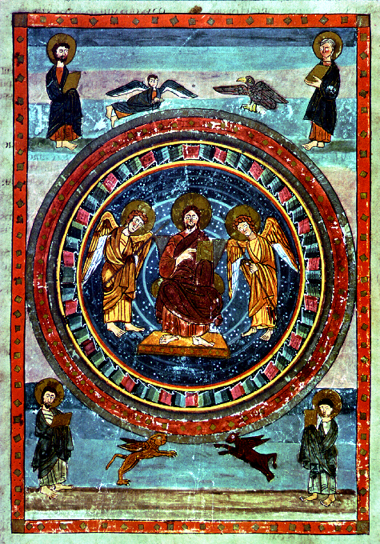

Indiana
University
History B351
Western Europe in the Early Middle Ages
Fall Semester 2005
Place: Woodburn Hall 100
Time: TuTh 1-2:15 pm
Section: 22093
Dr. Deborah M. Deliyannis
Office: Ballantine Hall 708
Office Hours: Th 2:30-4:00 or by appt.
Phone: 855-3431
Dr. Deborah M. Deliyannis
Office: Ballantine Hall 708
Office Hours: Th 2:30-4:00 or by appt.
Phone: 855-3431
email: ddeliyan@indiana.edu
Description
This course is about Western Europe and the Mediterranean in the Early Middle Ages. Use of the terms "Early Middle Ages" and "early medieval" can vary widely, depending on who is using them, and what they are talking about. For the purposes of this class, we will consider the period to cover the years from c. 400 to c. 1050 A.D.
The Early Middle Ages was a time of dramatic cultural, political, and social change. In the year 400, the Roman empire was a more or less unified entity that embraced most of western Europe, as well as much of eastern Europe, the Levant, and North Africa. People belonged to a variety of different religious, cultural, and ethnic groups, but all coexisted under a common Roman administrative and social umbrella. In the year 1050, western Europe was divided into various different political units, but again shared similar sorts of economic and social institutions, and had a common religion centered on Rome. The civilization of 1050 was very different from that of 400; during these 650 years, Europe experienced invasion, conversion, and other upheavals that overturned the old Roman order and shaped an entirely new system. Europe in 1050 contained many of the political, cultural, religious, ethnic, and linguistic boundaries that we know today, and thus the Early Middle Ages can be regarded as the period in which the foundations of modern western society were put into place. And yet, information about this period is difficult to come by; surviving written records are scarce, and do not always tell us what we would like to know about the process of transformation that took place during this period. One of the focuses of this class will be the sources which provide us with information about the period - textual, archaeological, and artistic - and how they are to be interpreted.
Requirements
The following are the requirements for this course:
Four 5-7 page papers 40% (10% each)
Participation in debate 14%
Midterm exam 18%
Final exam 28%
Class meetings will consist of lecture and group activities. Readings from the textbooks are assigned in order to provide background and supplementary material to what happens in class. It is very important that you do the reading BEFORE the class for which it is assigned. Discussion, group activities, debates, and other types of exercises will take place at various points in the semester, and you will need to be prepared for these.
Instructions for the papers may be found at the end of this syllabus. Each paper must be turned in in class on the day that it is due; in that class meeting, we will discuss the book. After the beginning of class on which a paper is due, the paper will be considered late (i.e. if you don't attend class but just show up at the end). Late papers will be marked down one letter grade for every day that they are late.
On five days we will have a debate in which members from the class participate. You will be assigned to one team of 7 students for one debate. ASSIGNMENTS WILL BE MADE ON THE FIRST DAY OF CLASS. You will be graded individually on your participation, so each team must allow all its members to participate. A website has been created for each debate, with the debate topic, readings (or links to readings), images, and other materials. Further instructions for the debates can be found below.
The midterm and final
exams will be open-note tests; you may
NOT however use books or photocopies.
It behooves you, therefore, to attend class and take good notes;
also to
take good notes on readings and other materials.
Readings
The books for this course are for sale in the bookstore, and have also been placed on reserve in the Library.
Unfortunately, there is no good general textbook for only the early part of the Middle Ages. We will use the first half of the following as the textbook for the class:
Medieval Worlds: An Introduction to European History, 300-1492, by Jo Ann Hoeppner Moran Cruz and Richard Gerberding (Houghton-Mifflin, 2004).
There are also four full-length books assigned. Three of these can be bought in the bookstore:
Martin O.H. Carver, Sutton Hoo: Burial Ground of Kings?. University of Pennsylvania Press, 1998.
The Lombard Laws, translated with an introduction by Katherine Fischer Drew. University of Pennsylvania Press, 1973.
Paul Edward Dutton, ed. and trans., Charlemagne's Courtier: The Complete Einhard. Broadview, 1998.
The fourth text can be found online: King Olaf Trygvason's Saga (parts I, II, and III)
*
* * *
* * *
* * *
* * *
* * *
* * *
* * *
* * *
* * *
Tentative Schedule
Introduction
Aug. 30: Introduction
Medieval Worlds, pp. 1-15
The World of Late Antiquity
Sept. 1: Why was Constantine so important to the Early Middle Ages?
Medieval Worlds, pp. 43-67
Sept. 6: Did Rome 'fall'?
Medieval Worlds, pp. 18-42
Sept. 8: When did the eastern Roman empire become Byzantine?
Medieval Worlds, pp. 91-104
Sept. 13: Why were the Muslims so successful?
Medieval Worlds, pp. 105-116, 204-210
The World of the Germanic Kingdoms
Sept. 15: What is an "Ostrogoth"?
Medieval Worlds, pp. 68-90
Sept. 20: How did Germanic society function?
PAPER
1 DUE: The Lombard Laws
Sept. 22: Why was Christianity adopted by the Germans?
DEBATE 1: The conversion of Clovis
Sept. 27: What happened to Roman Britain? Who was King Arthur really?
Medieval Worlds, pp. 165-169
Sept. 29: Who was buried at Sutton Hoo?
PAPER
2 DUE: Sutton Hoo
Oct. 4: NO
CLASS: Rosh Hashanah
Oct. 6: Did the Irish save civilization?
Medieval Worlds, pp. 169-176
DEBATE 2: Irish vs. Roman at the Synod of Whitby
Oct. 11: What did it mean to be a pope in the early middle ages?
Medieval Worlds, pp. 118-138
Oct. 13: NO CLASS:
Yom Kippur
Oct. 18: What made an early medieval saint?
Oct. 20: MIDTERM EXAM
The Carolingian World
Oct. 25: The year 750
Medieval Worlds, pp. 139-144
DEBATE 3: The coronation of Pepin the Short
Oct. 27: What happened on Christmas Day, 800?
Medieval Worlds, pp. 144-154
Nov. 1: What was new about the Carolingian renaissance?
PAPER
3 DUE: Charlemagne's Courtier
Nov. 3: Why did the Carolingian empire fall apart?
Medieval Worlds, pp. 155-164
Nov. 8: Were the Vikings the "scourge of God"?
Medieval Worlds, pp. 185-204
Nov. 10: What made a king "great"?
Medieval Worlds, pp. 176-184
DEBATE 4: King Alfred and Charlemagne
The Feudal World
Nov. 15: Did feudalism begin with the Carolingians?
Medieval Worlds, pp. 212-218
Nov. 17: What
is a serf?
Medieval Worlds, pp. 218-235
Nov. 22: What
is a Holy Roman Empire?
Medieval Worlds, pp. 236-256
Nov. 24: NO CLASS - Thanksgiving vacation
Nov. 29: How did the rest of Europe convert to Christianity?
PAPER
4 DUE: King Olaf
Trygvason's
Saga (parts I, II, and III)
Dec. 1: What is the proper relationship between church and state?
Medieval Worlds, pp. 257-259
DEBATE 5: Church and State: Charlemagne to Cluny
Dec. 6: Did the
year 1000 matter?
Medieval Worlds, pp. 259-260
Dec. 8: Conclusions
FINAL EXAM:
Thursday, December 15, 12:30-2:30 pm, Woodburn Hall 100
Each of the four books represents a different type of primary source for the Early Middle Ages: The Lombard Laws are law codes, Sutton Hoo is about an archaeological site, the Life of Charlemagne is a biography, and King Olaf Trygvason's Saga is a historical epic. For each source, read what is assigned, and write an essay which addresses the following questions:
What can a historian learn from this text (for Sutton Hoo, see below)? What aspects of society, culture, politics, religion, etc. are covered, and what are not? Examples might include (but are not restricted to) politics, class and family structure, architecture, material objects, theology, agricultural practices, education, etc. etc. You might introduce your essay by saying "this text is particularly useful for a historian who wants to know about x, y, and z, although not very useful for a, b, or c." Then write several paragraphs on x, y, and z. You should be specific: not just "this text tells a lot about agriculture", but "this text tells a lot about agriculture, for example on page 32, where it says ____".
All of these texts can be used for a variety of different historical information, so there is no one right answer, but you should indicate in your essay that you have read the entire text, and your examples should be relevant to the topics you are discussing.
You should also consider, if appropriate, what biases or problems there might be with the text, so that the picture it presents might not be complete or accurate. For example, do you come away with a picture of all levels of society, or only of one class or subgroup?
The Sutton Hoo
book will have to be
used slightly differerently; in this paper, you should ask "what
aspects
of society etc. has the author learned from the archaeological
material?" Then you might
consider biases or problems with the way the author has used the
material; do
you buy his arguments?
Don't be afraid of including your own opinions about what is in the book; the purpose of the exercise is to make you react to the book and what it is about.
General instructions
Essays should be typed/word processed, and should be of a length equivalent to 5-7 double-spaced pages, with settings of 1 inch margins (top, bottom, and sides) and twelve-point font.
When you quote or paraphrase any part of any written text, either these books or any other published material, you must provide the appropriate reference, either in parentheses, footnotes or endnotes. Failure to provide adequate references is considered plagiarism, for which the university has severe penalties. If you have any question about your use of sources, it is better to be on the safe side and provide a reference. If you have questions about what constitutes plagiarism, see the section on academic misconduct at http://dsa.indiana.edu/Code/index1.html
DEBATES - GENERAL
INSTRUCTIONS
Note that there is no term-paper for this class. The debate is an opportunity for you to examine one issue in more depth than simply reading a book and reacting to it. I expect that for your debate you will be well-prepared, knowledgable about the historical background and the issue itself, and able to argue a case. You are not required to do huge amounts of research, but you should at a minimum be very familiar with everything provided on the debate webpage. Pay particular attention to the primary sources, on which you should base your argument.
The debate will take the place of lecture on a given topic for that day; thus, debaters will be responsible for providing background material on their subjects (from the textbook, for example) as well as arguing their side. Background material assignments are made on the debate webpage. At a minimum you should present the relevant material from the textbook, in such a way that it forms a useful introduction to the debate. You may certainly use additional materials if you like.
EVERYONE IN THE CLASS SHOULD LOOK AT THE DEBATE MATERIALS AND READ THE ASSIGNMENT IN THE TEXTBOOK for that day; this material will not otherwise be covered in lecture, but you will be expected to know it for the tests.
Each debate assignment will consist of seven or eight parts. You must prepare all the parts, as you do not know which part(s) you will be called upon to present. In addition to the presentation and argumentation stages of the debate, there will also be counter-argument for which you should be prepared to speak on the spot. You will be graded INDIVIDUALLY on how well you do on the part that you were called on to present, AND how you do in counter-arguments and conclusions. I will NOT be grading you on your debating skills, so if you have never debated before, that is not a problem.
Note that in order to create a solid argument for your side, you will have to figure out what the opposing side's arguments might be so that you can plan what your counter-argument will be. You will be expected to present a solid and detailed argument for your side, using background and other information.
The structure of each debate will be the following:
I. Presentation of the background material
A. Team 1
B. Team 2
II. Presentation of the proposition - Team 1 - 8 minutes
A. Define the topic and the basis of your argument
B. Give your main arguments in detail, including quotes from primary sources
III. Presentation of the opposition - Team 2 - 8 minutes
A. Define the basis of your argument, possibly rebutting some points of Team 1.
B. Give your arguments in detail, including quotes from primary sources
IV. Counter-arguments - 8 minutes
A. Team 1
B. Team 2
V. Summaries (3 minutes each): summarize your arguments, rebut the arguments of the main team, state why your argument is preferable
VI. Vote by the class